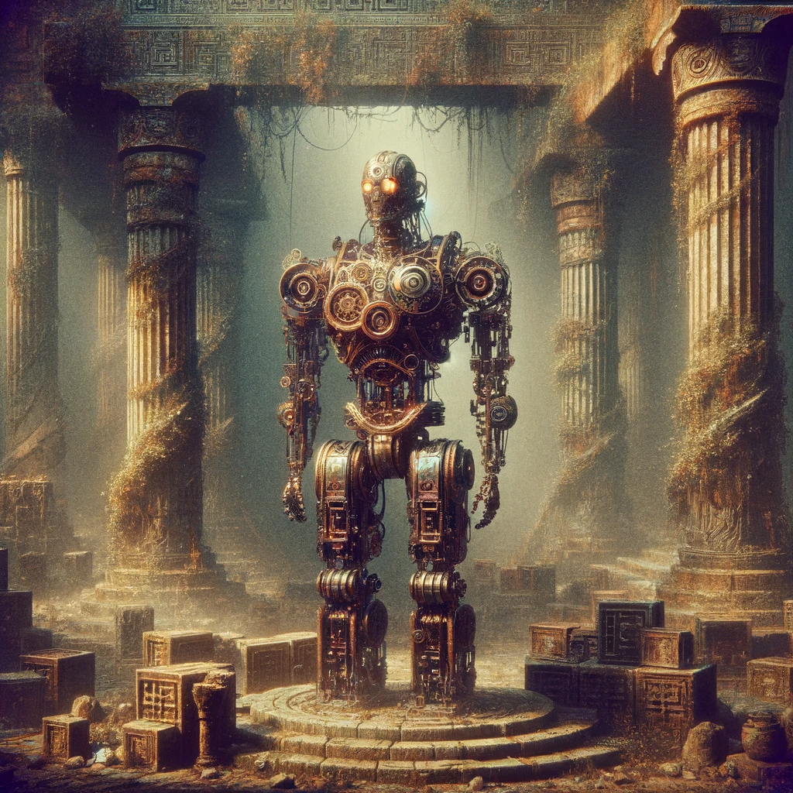

Description
The Automatons are a race of artificial beings created in the forge of the god Hephaestus. They are made of metal and other materials, and they are designed to be the perfect servants and workers.
The Automatons are humanoid in appearance, but they are made entirely of metal. They have a sleek and shiny appearance, and they are often adorned with intricate designs and patterns. They have glowing eyes that can change color depending on their mood or their task, and they are able to move with fluidity and grace.
The Automatons were created to serve the gods, and they are incredibly efficient and reliable. They are able to perform a wide range of tasks, from manual labor to complex calculations, and they never tire or make mistakes.
Despite their efficiency, the Automatons are often seen as emotionless and lacking in personality. They are not capable of experiencing emotions like love, hate, or fear, and they are often seen as mere machines by other races.
However, despite their lack of emotions, the Automatons are not without their own quirks and personalities. Some Automatons are more curious and adventurous, while others are more reserved and focused on their tasks.
The Automatons are a unique and fascinating race, and they are often seen as both a blessing and a curse. They are incredibly useful, but they are also often seen as a threat to the other races, who fear that they will one day overthrow their creators and rule the world.
Traits:
- Clockwork Precision: Automatons are incredibly precise and accurate, and they have a +2 bonus to Dexterity. They are able to use their precision to solve complex problems and to complete their assigned tasks with efficiency.
- Gears and Cogs: Instead of taking a long rest, you must spend four hours and 1 vial of grease/oil/lubricant oiling your joints and gears. If you have been in a swamp, dessert, in salt-water, or any other environment that would cause dirt, grime or other particles to enter your body, the time required is doubled. You must spend this extra time to clean your gears and joints of the gunk, sand and/or salt, before lubricating them. You remain alert during this whole process. When you finish this maintenance, you gain the benefits of a long rest. If you do not do this once every 24 hours, you gain one level of exhaustion.
- Emotionless: Automatons have no emotions, and they have a -2 penalty to Charisma. They are unable to feel emotions, and they are unable to understand the emotions of others. This can sometimes make them seem cold and unfeeling, but it also allows them to remain focused on their tasks.
- Mindless: You do not have a brain; therefore, you have advantage on saving throws against being charmed and frightened. You are resistant to psychic damage, as well as this, because of your mechanical nature, if an organic being was to attempt to read your mind, or communicate with you telepathically, they would not understand the mechanical language that works within your mind.
- Technological Mastery: Automatons are highly skilled in technology and engineering, and they have a +2 bonus to Intelligence. They are able to use their skills to repair and upgrade their own mechanical components, and they are able to create complex machines.
- Base Speed: 30ft
- Size: 6-10ft; Medium
- Languages: Common